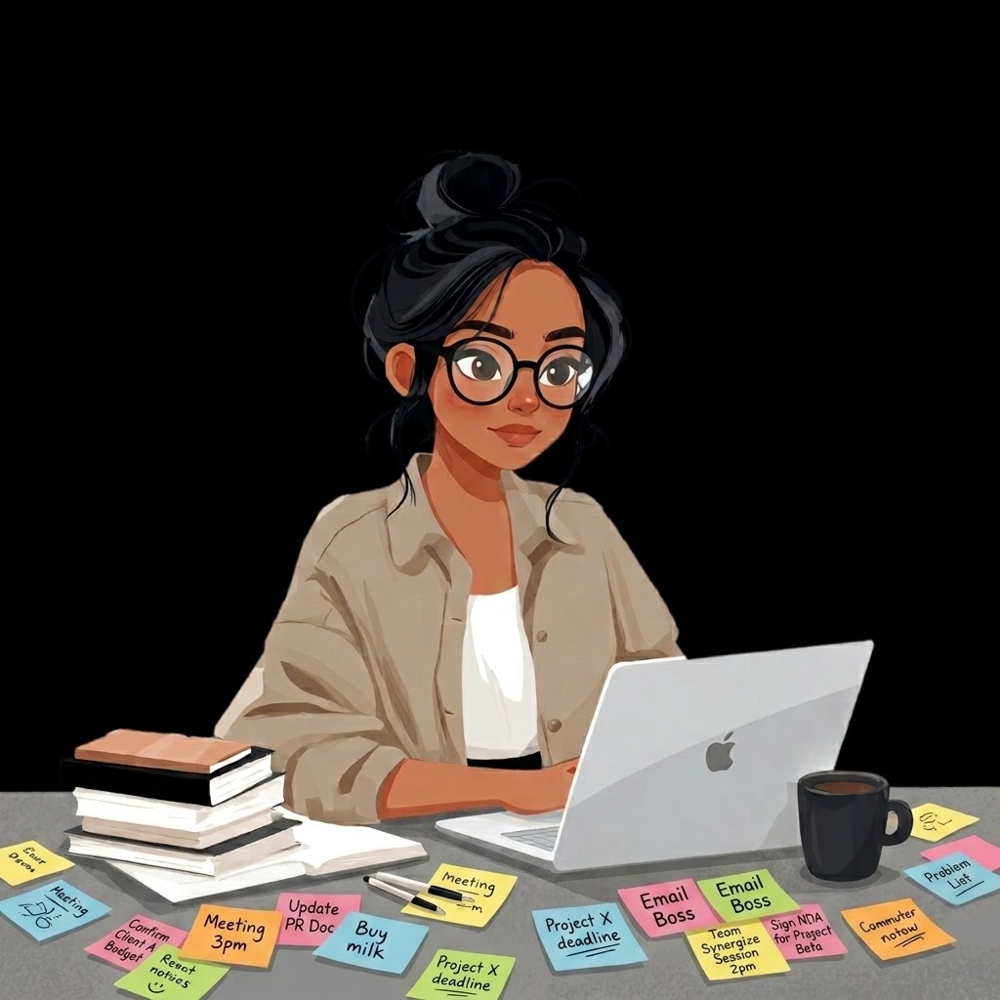

Product-focused researcher and developer bridging user needs, interaction design, and robust technical architectures.

I'm an undergraduate student studying Human-Computer Interaction and Computer Science at Carnegie Mellon University.
My focus sits at the intersection of HCI research, product management, and full-stack software development. I translate qualitative user research and interaction principles into functional, scalable software products.
Synthesizing design research, product strategy, and engineering.
Full Stack Systems, React, Python, APIs, Machine Learning Integration
AI PM & HCI Methodology
Usability Testing, Needfinding, Design Systems, Figma Mockups
Click any card to open full case study details and research methodology.
Full Stack Developer & HCI Researcher
Architecting and evaluating Privy, an AI-driven privacy risk analysis engine for product managers and engineering leads.
Full Stack Developer & UX Researcher
Designing analytics dashboards and data workflows for educators across multiple school districts.
AI & Technical Product Manager Intern
Spearheaded automated video coaching backend features, reduced latency, and co-invented a provisional patent.
Full Stack Web Lead
Maintained web architecture and spearheaded event infrastructure for tech ethics research initiatives.
Click to open full problem statement, user research, and technical solutions.
Generative Video Translation & Accessibility
Generative AI translation pipeline combining transcription, lip-sync, and voice-cloning models to preserve speaker intent.
AI Prescription Auditor & Clinical UX
Clinical decision support tool using RL fine-tuned LLMs to prevent prescription errors and combat alert fatigue.
Balanced across design research, product management, and engineering. Click any tag to inspect or toggle selection.
Click on any skill tag above to inspect details on how I apply it across HCI research, product planning, and technical execution.